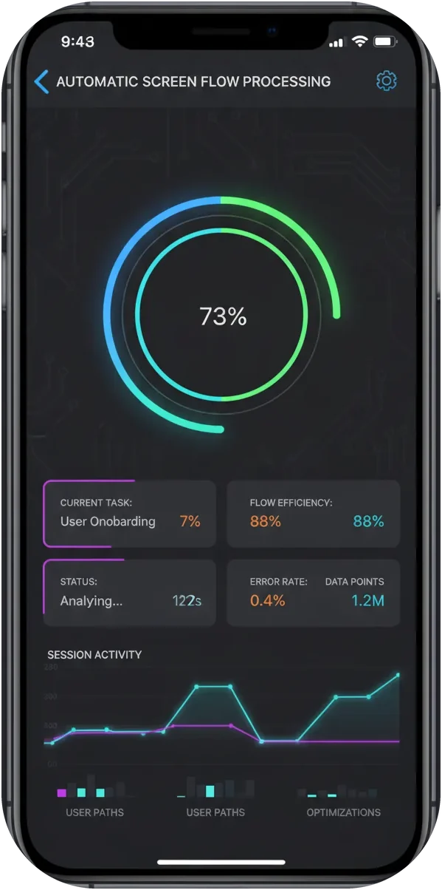
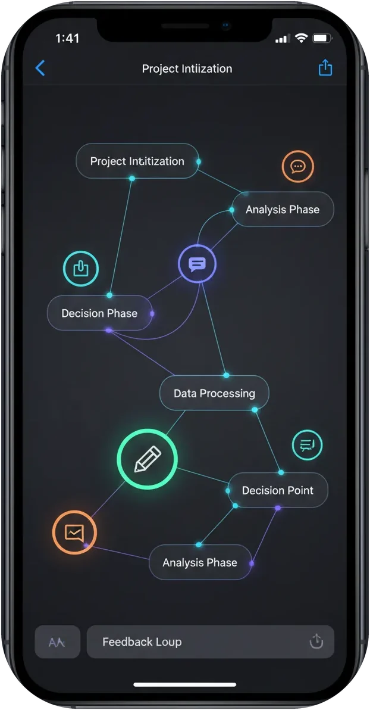
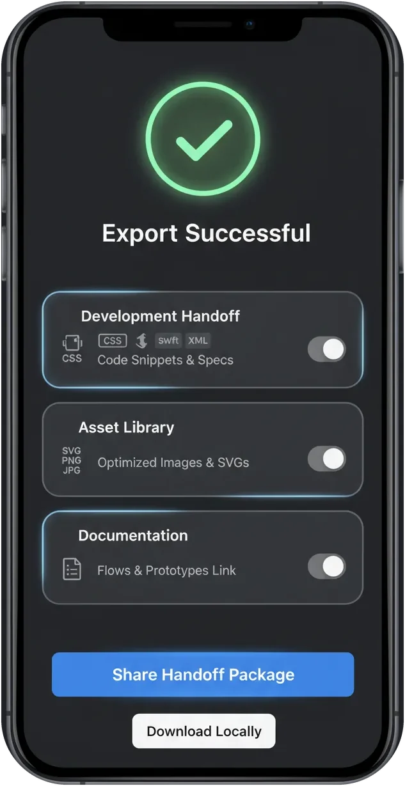

Record any app.
Get the entire flow.
Flow Capture turns a screen recording into a clean UX flow on your iPhone: meaningful screens, comments in context, and a handoff package for Figma or your AI tools.



Every screen.
In the right order.
Feedback that stays
in context.
Private and
local-first.
Record once.
Skip the screenshots.
Record any app on your iPhone or import a video. Flow Capture finds the meaningful screens and drops repeats and transitions.
Record or import
Screen recordings, videos, and screenshots all work as a source.
Meaningful screens only
Repeats and transitional frames are removed automatically.
Order preserved
Screens stay in the sequence they happened, ready to review.
Works with
See the structure,
not a gallery.
Flow Map turns a recording into stages and branches, and keeps later versions of the same journey together.
Stages and branches
Decision points and alternate paths are visible at a glance.
Versions together
Record a flow again and keep the new version next to the old one.
Reorder and label
Fix the sequence, name screens, remove what doesn't matter.
Say it while
you see it.
Voice or text notes attach to the exact screen. No separate document, no lost context.
Hand off
without assembly.
One package with screens, order, branches, and comments. Open it in Figma as an editable board, or feed it to your AI tools.
Export to
Designed for
The iPhone
Flow Capture is a native iOS app. Processing runs on the device, no account is required, and nothing leaves your iPhone until you choose to share.
Privacy
Questions and answers
What can I record or import?
Any app on your iPhone. Record it directly, or import an existing screen recording, a video, or a set of screenshots.
How does Flow Capture decide which screens matter?
The recording is analyzed on the device. Repeated frames and transitions are removed, and the remaining states are kept in the order they happened. You review the result before exporting.
Does my recording leave the device?
No. Processing runs locally, and no account is required. Nothing is uploaded unless you explicitly choose to share or sync.
What is FigZIP?
A native export package that opens in Figma as an organized, editable board with your screens, order, branches, and comments.
Can I use the export with AI tools?
Yes. The ZIP export bundles screens and your narration in a structure that works as context for your own AI workflows and prompts.
Which devices are supported?
iPhone running iOS 18 or later, with a visual design tuned for iOS 26.